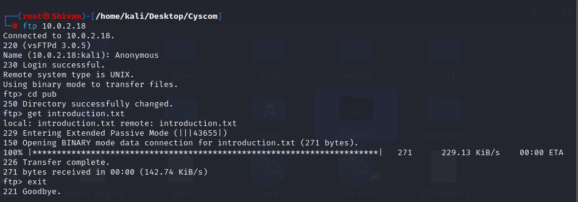
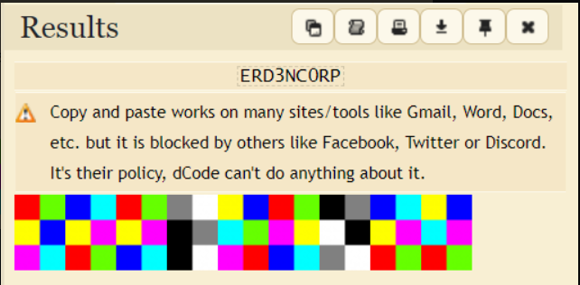

Overview
| Challenge | Difficulty | Points | Category | Flag |
|---|---|---|---|---|
| Level 1 - Discord Server | easy | 5 | general | zyp{g0od_lV6k_f0x3r} |
| Level 2 - Email Header | easy | 10 | cryptography, forensics | zyp{Welcometozyphequest_0012} |
| Level 3 - Password Protected PDF | easy | 10 | general | zyp{string_1408} |
| Level 4 - Leo's Sinister Bellow | easy | 20 | steganography, forensics | zyp{P@y_@t73nt!0n_7o_L30} |
| Level 5 - YouTube Video | easy | 20 | general | zyp{hiddenmessage.mp3} |
| Level 6 - Der Anfang | easy | 30 | osint, steganography | zyp{VG3wf$xxRM1mCq$CMyBJjO0zflAV$q} |
| Level 7 - Audio | medium | 30 | spectography, forensics | zyp{ADIO} |
| Level 8 - Z0D1AC | easy | 40 | cryptography | zyp{51.025N,1.1592E} |
| Level 9 - f0x3rr | medium | 40 | web, osint | zyp{language_en} |
| Level 10 - Zypher Quest 1 | easy/medium | 50 | general, linux | zyp{L0S7} |
| Level 11 - Zypher RE | medium | 50 | reverse_engineering | zyp{S4NI5Y_17T6CT_} |
| Level 12 - PCAP | medium | 60 | forensics, network | zyp{We1Com_R3Dact3d_4130} |
| Level 13 - NFT | medium | 60 | misc | zyp{reward_6228} |
| Level 14 - Zypher Quest 2 | medium | 70 | cryptography | zyp{seal_is_undone} |
| Level 15 - Zypher Quest 3 | medium | 70 | forensics, linux | zyp{bruteforce} |
| Level 16 - level8z2 | hard | 400 | boot2root, cryptography, steganography | zyp{Congrats_ERD3NC0RP} |
Level 1 - Discord Server
Challenge
Checkout our Discord Server
Solution
Join the Discord Server with the link provided and you get to see the following channels

Your goal is to locate the flag. In #announcements channel you can see the flag inbetween the rules as show in the image below üëáüèª

That’s it! You’ve successfully completed Level 1 by following the hints and rules.
Flag
zyp{g0od_lV6k_f0x3r} Level 2 - Email Header
Challenge
You have given a Message.eml
Hints
Check for authenticity of the email
Analyse DKIM-SIGNATURE in the email header
Decrypt the cipher using ROT13
Solution
Download the given .eml file
Check for the DKIM-SIGNATURE (A DKIM signature in an email header is a cryptographic stamp that verifies the authenticity of the email. Usually it uses rsa256 for encryption but here we used ROT13 weak cipher text for encryption)
1
2
3
4
5
DKIM-Signature: v=3D1; a=3Drot13; c=3Dsimple/simple;
d=3Dtech=2Ecom; i=3D@tech=2Ecom; q=3Ddns/txt; s=3Dmain;
t=3D169784749; x=3D17293849;
h=3Dmime-version:from:to:subject:message-id:date;
p=3Dmlc{Jrypbzrgbmlcurdhrfg_0012}
Decrypt the cipher using ROT13 to get the flag
Flag
zyp{Welcometozyphequest_0012} Level 3 - Password Protected PDF
Challenge
You are given a PDF
Solution
You need to first extract the crackable information from the file using John the Ripper tool.
1
$ pdf2john.py unknown.pdf > hash
Now, crack the hash using John the Ripper tool.
1
$ john hash --wordlist=/usr/share/wordlists/rockyou.txt hash

Now, you can see the password for the PDF file is mystery. Use this password to open the PDF file and you will get the flag.

Flag
zyp{string_1408} Level 4 - Leo's Sinister Bellow
Challenge
This is a basic forensics challenge. You are given an image file Leo’s Sinister Bellow
{kind=link}
Solution
First thing to do in any steganography challenge is an exiftool check. This will tell you if there is anything hidden in the metadata of the image
1
$ exiftool 1.png
Unfortunately, there is nothing in the metadata. Next, we can use binwalk to check for any hidden files in the image.
1
$ binwalk 1.png
We can see that there are no files hidden in the image. This means that some other encoding technology has been used.
The description asks us the examine the image closely.
With this information we can suspect that the method used for hiding the flag is LSB encoding.
In order to perform LSB extraction, we will need some tools.
The tool I will be using is stegolsb
https://pypi.org/project/stego-lsb/
Running the stego-lsb tool on the image gives us the flag.
1
$ stegolsb steglsb -r -i Chall.png -o out.txt -n 1
1
$ cat out.txt | grep zyp
Flag
zyp{P@y_@t73nt!0n_7o_L30} Level 5 - YouTube Video
Challenge
A YouTube video link is given YouTube Video
Solution
The flag is hidden in the Subtitles of the video. You can see the subtitles by clicking on the CC button in the video.
At 1:28, you can see the flag.

The flag is in foriegn language. You can translate it using Google Translate.
Flag
zyp{hiddenmessage.mp3} Level 6 - Der Anfang
Challenge
An image file is given. Der Anfang
{kind=link}
Solution
The link to the social media post is given in the meta data of the image file in the id name of UserComment and the meta data can be viewed using exiftool.
1
$ exiftool der_Anfang.jpg

In the reddit post the link to the git history is salted and placed
Link after removing unwanted special characters üëáüèª
https://github.com/yshui/picom/commit/a2bcf94ce8fa7216f69fb6ace2c1b3776bdce823
The flag is in the commit message.
Flag
zyp{VG3wf$xxRM1mCq$CMyBJjO0zflAV$q} Level 7 - Audio
Challenge
A audio file is given 4UDI0.mp3
Solution
Audacity can be used to view the spectogram to an audio
Import the audio file in the project
A waveform will be displayed

Right click the track and choose spectrogram
The flag is displayed in the spectrogram at 6 seconds

Flag
zyp{ADIO} Level 8 - Z0D1AC
Challenge
You have given a file Z0D1AC
Solution
View the file contents using cat
1
$ cat Z0D1AC

So we can copy the binary and use an online decoder to convert the binary to human readable text.
Now we get this new ciphered test which contains the coordinates of the location. This is base64 encoded. So we can use an online decoder to decode the text.

Enclose the result in zyp{} as the flag format.
Flag
zyp{51.025N,1.1592E} Level 9 - f0x3rr
Challenge
You are given a website
Solution
In the website, f0x3rr is a endpoint
Click Download and a file will be downloaded
Convert this decimal to string using online converter and you’ll get a github and in the issue section there will be a password hidden in the conversation
Password is zero-day


When you visit the endpoint, click the download button and you’ll Zypher event poster


Scan the QR code and you’ll get a base64 encoded string, decode it and you’ll get a link an endpoint /vitcyscomzypher

Go to the endpoint and download the file

Convert the binary to string

Decoding the Caesar cipher

Flag
zyp{language_en} Level 10 - Zypher Quest 1
Challenge
You are given a file ZypherQuest
Solution
As the file don’t have any extension, we can use file command to check the file type
You can see it is a zip file. Now use unzip to extract the file

You can see the extracted file is a gzip file which is archived using tar. You can see 3 new files have been extracted.


You may want to read the following files but skipping that, we check the file type for Seal.

The given file is a bzip2 compressed data. To unzip the file, we can firstly rename the file to add .bz2 extension and proceed to unzip it using bzip2. This gives us a tar file which can be further extracted using tar.
1
2
3
mv Seal Seal.bz2
bzip2 -d Seal.bz2
tar -xvf Seal
Instead of these 3 steps we can directly uncompressed the given data “Seal” using tar -xjf command.

We can see new files have been uncompressed. We also see a file named Start.sh which is a script file. We can try running this using ./Start.sh. Running it essentially does nothing but delete old files cluttering the screen if they weren’t already deleted. We can try and read some files to try and get some clues. Here the file Admin looks interesting. Checking its file type, we see it is another tar file.

Extracting it gives us a file name Z0d1aCisWatching. We again check the file type and try decompressing it.

Further checking the decompressed file (data in this case) We see a tar file again. Decompressing it gives an interesting file.

Checking its file type shows there are no permissions assigned to the given file. So, we used chmod 444 or chmod +r to make the file readable.

Flag
zyp{L0S7} Level 11 - Zypher RE
Challenge
You are given a ZypherRE.py file
Solution
On running the file, it asks for the username that is ‘FOX3R’ as evident from this part of code
1
2
3
4
5
6
7
8
def ui_flow():
intro()
if username=='FOX3R':
while loop:
menu()
else:
print("Access denied")
ui_flow()
After providing the username as input, we get some messages pertaining to the overall theme of the CTF event, ZYPHER.

Choosing the Rabbit option leads us to nowhere. It must be a rabbit hole as the name suggests.
Choosing the enter key option, it asks for a key that leads us to the key function
1
2
3
def key(x):
if x==hashlib.sha256(salt.encode('utf-8')).hexdigest()[4]:
return True
1
salt = "ZYPHER"
We can find x by running this piece of code(encrypting salt using SHA256 after encoding it in utf-8 format)
1
2
3
4
5
6
import hashlib
import cryptography.fernet import Fernet
import base64
salt = "ZYPHER"
hashlib.sha256(salt.encode('utf-8')).hexdigest()
hashlib.sha256(salt.encode('utf-8')).hexdigest()[4]
Now that we have found the key, let us inspect the encrypt() function
1
2
3
4
5
6
7
8
9
def encrypt(flag,key):
enc=''.join([chr((ord(flag[i]) << key) + ord(flag[i + 1]))+chr(ord(salt[random.randint(1, 10)])<<key) for i in range(0, len(flag), 2)])
print(enc)
return enc
def decrypt(enc_text,key):
...
#return flag
#use the flag to unlock file
1
#encrypt('FLAG', x)
We’ve found the key as 8
The encrypt function takes the flag encrypts it with the key and returns the ciphertext(enc)
The program is prompting us to write a decrypt function to take the ciphertext and key as parameters and return the original flag.
Also the ciphertext is already given in this part of code
1
2
3
4
5
salt='ZYPHER'
secret_key_prior='hacker{'
secret_key_main='匴倀义刀㕙䌀弱䬀㝔䬀㙃䄀呟刀'
secret_key_latter='}'
Carefully investigating the encryption code, we see that the program shifts the bits for every other letter of the flag, left by 8 bits (1 byte). Then, it adds the next letter of the flag to the shifted value .Also every other letter of ciphertext is just a random character.
We can reverse this by first removing/skipping through the random characters.
Then we shift the bits right to get the first letter in the pair and convert the encoded character to bytes and get the last byte to get the second letter in the pair. The following code decrypt.py
1
2
3
4
5
6
7
c='匴倀义刀㕙䌀弱䬀㝔䬀㙃䄀呟刀'
a=''
for i in range(0,len(c),2):
e=chr(ord(c[i])>>8)
a+=e
a+=chr(ord(c[i])-(ord(e)<<8))
print(a)
Here ‘a’ is the final flag. We have step 2 in range to skip the random characters
On running this decryption code, we get the flag as S4NI5Y_17T6CT_
Flag
zyp{S4NI5Y_17T6CT_} Level 12 - PCAP
Challenge
You are given a network_mitm.pcap file
Solution
Extract contents using NetworkMiner

Load in the pcap file and extract the zip file
Extract flag.zip using hashed password inside welcome.pdf
Decrypt hashing using CrackStation

Extract the files using password welC0me

1
$ cat flag.txt
Flag
zyp{We1Com_R3Dact3d_4130} Level 13 - NFT
Challenge
You have been given a file called image.nft
Hints
- Look at this hint
Solution
Download the file
Here Z0d1ac_1 seems to look like a username. Let’s google digital market for sea of art and see if something related to nfts comes up.
The first link itself comes up to be the biggest nft marketplace and we the link the word sea to opensea from previous hint. Lets lookup for Z0d1ac_1 username in opensea.
On the profile page of Z0d1ac_1 you can see the same nft as image.nft file, open the NFT
In the description it key is mastermind
When you look in the item activity section, you’ll find transfers between different entities of Z0d1ac but one suspicious account involved in all these transfers is RU55I4N_M45T3R
When you look for the RU55I4N_M45T3R username, you’ll find another NFT
In the description you can see the reward link
Go to https://www.dcode.fr/cipher-identifier and look for possible ciphers
Here we can see that highest probability is for ASCII Code

Flag
zyp{reward_6228} Level 14 - Zypher Quest 2
Challenge
You have been given a file 7.1.zip
Solution
We know that the files are RSA encrypted since we are given private keys for each of them We will use the following command to decrypt each of them
1
openssl pkeyutl -decrypt -inkey private_key1.pem -in encrypted_file1.bin -out decrypted_chat1.txt
1
openssl pkeyutl -decrypt -inkey private_key2.pem -in encrypted_file2.bin -out decrypted_chat2.txt
1
openssl pkeyutl -decrypt -inkey private_key3.pem -in encrypted_file3.bin -out decrypted_chat3.txt

Flag
zyp{seal_is_undone} Level 15 - Zypher Quest 3
Challenge
You have been given a file auth.log.zip
Solution
We can see that the zip file is password-protected
So we have to use a dictionary-based attack tool to brute-force the password
1
$ zip2john auth.log.zip > auth.txt

This will give you the password, use it to unzip the file and go through it

As we can see the attacker used SSH brute force to hack into the machine
The answer is SSH bruteforce (hydra)
Flag
zyp{bruteforce} Level 16 - level8z2
Challenge
You have been given a Tryhackme link
Solution
You will be getting an IP address when you start your machine 10.0.2.18, you can proceed to conduct an Nmap scan to gain insights into the target network. We’ll use a comprehensive scan to check all available ports and enable version detection to identify the services running on those ports.

Exploring FTP and SSH Services
In the Nmap results for IP address 10.0.2.18, we observed that the FTP and SSH services are open and accessible. This presents an opportunity to investigate these services further.
We’ll start by focusing on FTP (File Transfer Protocol) and explore the possibility of anonymouslogin. Anonymous FTP login is a common way to access publicly available files without the need for authentication.

In the course of our exploration, we discovered an ‘introduction.txt’ file on the FTP server, which contains the username ‘zodiclown’. Now that we have the username and are aware that theSSH service is available, we can attempt to gain access to the system via SSH. However, access requires a password, and to uncover it, we will employ a password brute-force approach using a tool like ‘Hydra’ to systematically try various password combinations in an attempt to gain entry.

Upon utilizing Hydra for a password brute-force attack, we successfully retrieved the password, which is cookie. With the obtained credentials in hand, we can now proceed to access the system via SSH and embark on an exploration to uncover the content and resources it holds
After successfully logging in via SSH, we decided to check the list of users present on the system, which can be found in the /etc/passwd file. In doing so, we discovered the existence of two user accounts, zodiclown and zodiac. This observation led us to the inference that the zodiac user account may hold significant information, motivating us to explore its home directory and potentially gain root-level access.

We again go back to zodiclown’s home folder, we found two folders named chitchat and plans. Both folders contained numerous files, but the key clue was discovered in the chitchat/personal_conv.txt file. This file revealed an image link, which serves as an intriguing lead for our further investigation.

Following the provided image link, we encountered an image featuring Gothic Z. We proceeded to download this image and initiated our steganographic skills for analysis. This technique involves examining the image for hidden information or messages concealed within it.
Utilizing initial tools like exiftool and strings, we uncovered a passphrase, which turned out to be topsecret. This discovery strongly suggested the presence of hidden information within the image. With this in mind, we applied steghide to extract concealed data, revealing a file containing a Drive link associated with Zodiac’s activities.

Upon accessing the Drive link, we encountered a hexhue. To decode this information, we utilized the online tool found at https://www.dcode.fr/hexahue-cipher

After deciphering, the result revealed the password ERD3NC0RP, which granted us access as the root user, further advancing our investigation.
After obtaining the root password and successfully logging in, we navigated to the zodiac user’s home directory. Inside this directory, we encountered a Final_Flag folder. Within the Final_Flag folder were six text files. The final text file, upon inspection, revealed the flag.

Flag
zyp{Congrats_ERD3NC0RP}